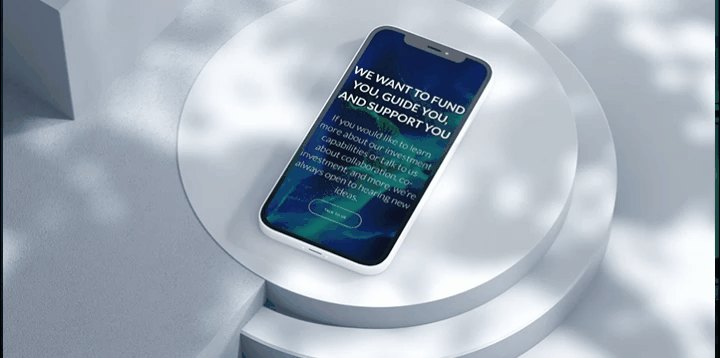
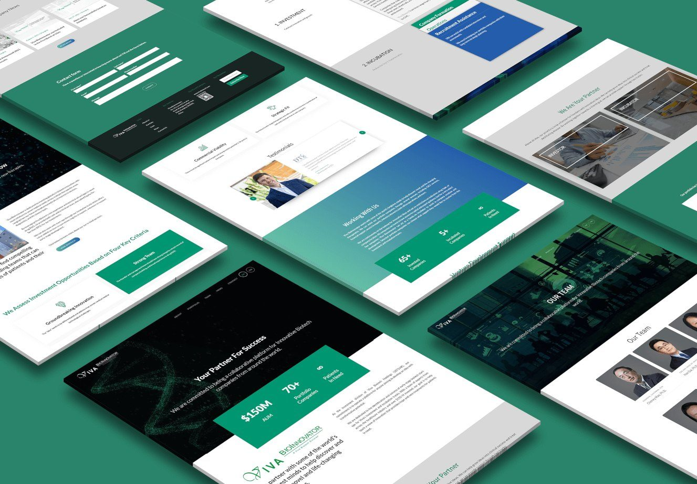
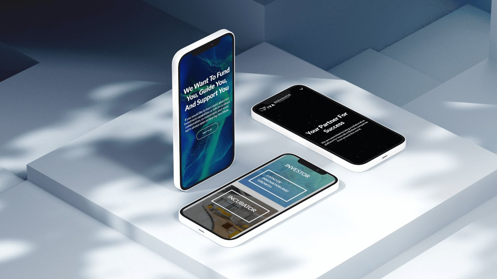

Science · Brand Creation
Fueling the
Future of Medicine
Viva BioInnovator is dedicated to supporting cuttingedge biotech startups.
Viva BioInnovator
Science · Brand Creation
- Brand Strategy
- Visual Identity
- Website Development
Brand Creation.
Goal
A dynamic online presence to effectively engage startups and investors, showcasing the company's commitment to biotech innovation.
Solution
A sleek, modern website paired with a revitalized brand identity, reflecting Viva BioInnovator's role as a catalyst for medical advancements.
What we delivered.
Brand Strategy
Crafted a strategic vision to position Viva BioInnovator as a hub for innovation in the biotech space.
Visual Identity
Designed an impactful, forwardthinking identity that reflects cuttingedge biotech advancements.
Website Development
Built a digital platform showcasing startup successes and Viva’s commitment to innovation.
The palette
- Deep teal#009672 · Primary
- Deep teal surface#2ea98b · Primary surface
- Paper cyan#e1eef0 · Secondary
- Paper cyan shade#c2e2de · Secondary shade
The work



In their words
“The Pulse team's creativity and responsiveness were truly top-notch. They created a design that really impressed our entire team and worked hard through the troubleshooting process to make sure the final product had smooth usability and functionality. Pulse branding redesigned our company website in a manner that conveyed our company vision and strengths through a medium that was visually appealing and had a great interface. We're excited to have a website we can proudly show off as being representative of who we are!”
— Chloe Kamps, Alliance Manager
Where it landed
Enhanced brand recognition and digital engagement, positioning Viva BioInnovator as a key player in the global biotech landscape.
Have a similar business problem?
Bring us the problem.
You do not need to know which service you need. Start with the problem, or run the free audit and let the evidence choose the next step.